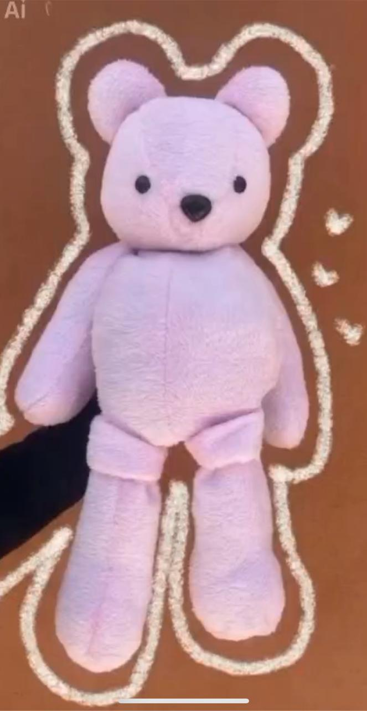
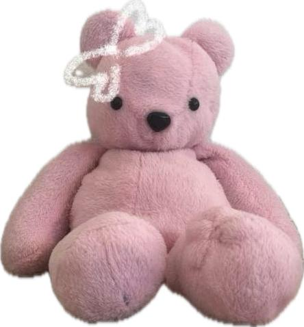

"Su amor sigue aquí, en cada abrazo"


Creemos que el amor no se va, solo cambia de forma. Nuestros peluches memoriales están hechos para honrar a esas personas que dejaron huella en tu corazón. Cada puntada guarda un recuerdo, cada abrazo reconforta el alma.
"Un pedacito de ellos, contigo todos los días"
Creamos peluches memoriales únicos inspirados en el recuerdo de esa persona especial. Cada detalle busca transmitir cercanía, amor y consuelo, convirtiéndose en un abrazo para cuando el cielo queda lejos.
"Honra su memoria"
Puedes enviarnos tu idea, colores o detalles especiales para crear un peluche lleno de significado y amor.
Crear el suyo